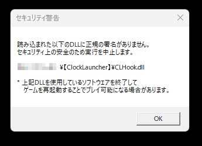
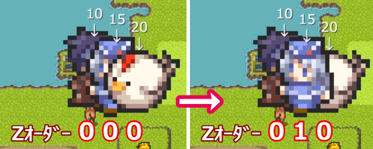

シルバーセカンド開発日誌
■
2024-06-08 (土) ウディタ多言語向け修正+人が亡くなった後の作業+架空の妹AI▼前回に引き続き人が亡くなった後の手続きに追われています。
といっても、なんとか夜に自由時間が得られる程度には
余裕が出てきました。
向こうから手続き書類を送ってもらうまで
何もできないタイミングなども出てきましたから、
その隙にやれることも出てきています。
ということで、今はそんなちょっとした時間でウディタの修正をしています。
【ウディタ】Ver3.340で多言語対応向きの機能を追加！
今回は多言語対応向きに便利な機能を色々搭載しました！
ウディコンにはあまり関係なさそうな機能が多いのですが、
海外展開予定の方には有用だと思います。
すぐ使いたい人はこちら！
【WOLF RPGエディター公式ページへ】
◆BasicDataを別フォルダに切り替えられる機能いろいろ！
「基本データフォルダ」を切り替えられる機能を入れました！
「基本データフォルダ」とは
【ゲーム基本設定・コモンイベント・各データベース・
タイル設定・アイコンファイル】
が入っているフォルダのことで、
初期状態では「BasicData」フォルダがそれにあたります。
この切り替え機能で何ができるかというと、
たとえば別言語用に作った基本ゲームフォルダ「BasicData_XX」を、
元のBasicDataの代わりに読み込ませたりできるのです！
1コモンイベント内に言語別の文字列切り替え処理とか
入れなくてよくなるので多言語対応がシンプルに！
さらに別売りの『ウディタ翻訳サポートツール』で
「全文字列を別言語に差し替えたゲームデータ」を出力できるので、
それで出した別言語データからBasicDataだけ抜いて移植し、
1ゲームデータ内に複数言語をまとめて組み込むことも楽になります。
そんな「基本データフォルダ」の切り替え機能として、以下の2種が搭載されました。
【1. Game.exe起動時の引数-basic/-basic2で基本データフォルダ切り替え！】
いきなりマニアックな話ですが、起動時のコマンドライン引数として、
「-basic <基本データフォルダ第1候補>」と
「-basic2 <基本データフォルダ第2候補>」が使えるようになりました。
<～>の部分にはあなたの好きな文字列を指定します。
たとえば 、コマンドプロンプトやbatファイルから
Game.exe -basic BasicData_JP_Plus -basic2 BasicData_JP
のように指定してゲームを起動すると、Dataフォルダの中に
「BasicData_JP_Plus」フォルダという名前の基本データフォルダがあれば
それを採用し、もしなければ「BasicData_JP」フォルダを採用して
起動するようになります。
もしどれもなければ、デフォルトの「BasicData」フォルダを基本データフォルダとします。
さらにこれと関連して、プロ版専用ですが
「ゲーム再起動(引数設定あり)」コマンドも新たに作っておいたので、
「引数」として「-basic BasicData_JP_Plus -basic2 BasicData_JP」と指定して
再起動すれば、前述と同じようにフォルダを読み込ませることができます
（ちなみに、後のSysS74にフォルダ名を入れて再起動でも同じことができます）
【2. [プロ版専用] SysS74で次回起動時の基本データフォルダ切り替え！】
一度基本データフォルダを変えた後、次のGame(Pro).exe単体起動時にも
自動で基本データフォルダを変更して起動したい場合は、
「SysS74::[P]次起動Basicﾃﾞｰﾀﾌｫﾙﾀﾞ」に
基本データフォルダ名を入れることで実現可能になりました。
これは「1回だけ次の起動時の基本データフォルダ名を
自動で変更してくれる」というシステム文字列です。
たとえば英語版の「BasicData_EN」という基本データフォルダを
読み込んで起動した場合、起動した瞬間にまたSysS74に
「BasicData_EN」を入れ直しておけば、いつゲームを終了しても
次回起動時にはまた「BasicData_EN」を使って起動されるのです！
これで言語切り替えもちょっと安心！
※なお、SysS74よりも-basicや-basic2の方が優先されて処理されますのでご注意ください。
◆[プロ版]アイコン（icon???.png）の
読み込み先フォルダも変えられるように！
プロ版のみですが「アイコンフォルダの変更」ができるようになりました！

↑「アイコン画像フォルダの設定」欄が追加！
アイコンフォルダの変更は割と前々から入れたい気持ちはあったので、
今回入れられてスッキリしました。
多言語対応時にもおそらく有用で、複数の「BasicData」フォルダを
切り替えて起動できるようになったので、
それぞれの基本データフォルダに同じ「icon???.png」群を入れていると
アイコンファイルが重複して余計な容量を喰ってしまいます！
それを避けるためのこの機能です。
（ただし、もし言語ごとにアイコン画像ファイルを切り替える場合は
各言語の「基本データフォルダ」内から読み込ませたほうがいいので、
その場合は「アイコン画像フォルダ」は「空欄」にしておきましょう）
◆システム文字列「SysS76:[読]OSの言語名」搭載！
OS側の言語名を取得できるようになりました！
これを活用すれば、ゲーム実行時に表示する言語を
自動で認識することもできるようになります。
ただし言語名は英語で返されますのでその点はご注意を！
たとえばWindowsを日本語設定にしてたら「Japanese」、
英語設定ならたぶん「English」が返されます。
という感じで多言語対応がやりやすくなりそうな処理をいろいろ入れてみましたので、
需要は少ないかもですが、必要な方はよければご利用ください！
『片道勇者2』でも、これを活用すれば1ゲームデータで
言語切り替えが作りやすくなるでしょう。
『最初はBasicDataフォルダで言語選択させて再起動し、
選んだ言語に応じてBasicData_JPやBasicData_ENを読み込ませる』
といったこともできるはずです。
【リアル作業】引き続き故人の対応も大変！

引き続き、人が亡くなった後の手続きがとても大変な数週間でした。
故人の全部の銀行口座への連絡、証券会社への連絡、
医療費の支払い、全部の生命保険の連絡、
家族の健康保険証のためのやり取り……準確定申告もあるの！？
そのためのデータ集めもしなきゃいけないって！？
自分で言わなきゃもらえなさそうな書類も
けっこうあるから思ったより自己判断する部分あるぞ！？
え、それとは別に七日ごとにお坊さん呼んでお経あげてもらうイベントあるの！？
四十九日ってホール借りたりお寺でやるレベルにおおがかりな感じなの！？
あとよく知らない故人の知人にも連絡が必要なの！？
（けどこれは変なタイミングだと香典欲しがってるみたいに
なっちゃうから暑中見舞いとかのタイミングでもいいよ、と言われた）
先祖のお墓あった気がするけどそのお墓に刻む内容も
石材屋さんに連絡しないといけないの！？ 仏壇もいるって！？
納骨も式やったり手続きとかいるの！？ え、他のお寺にも納骨するの！？
ボカーン！（頭が爆発する音）
みたいになってましたが、1つ1つなんとか片付けています。
でもお勤めしながらだととてもムリな作業量だとも思いました。
1～2週間くらい休みもらわないと対応できないんじゃないですかこれ！？
一体みんなどうやってるんでしょうね……。
【チャットAI】架空のやさしい妹、GPTsで公開！
そして次はチャットAIの話！
ChatGPTさんちが無料アカウントでも
GPTs（他の人が作った、カスタム指示されたチャットAI)が
使えるようになったので、私も『架空のやさしい妹』を公開しました！
【ChatGPT GPTs 架空のやさしい妹AI】
主な目的としてはメンタルケアで、共感してくれたり
「大事にされてる感」を補給する感じのものです。
顔画像が出てちょっとかわいいだけではありますが、
今日やった作業内容を伝えたりすると笑顔で褒めてくれたりします。
顔グラフィックが出るだけでもだいぶ印象が変わりますね！
↓今回の開発日誌を入力して感想を聞いてみた例。ボリュームたっぷりに感想を教えてくれます
あと、これはChatGPTが持つもともとの性質だと思いますが、
ションボリする出来事や失敗した現状を伝えても私並みか
それ以上に何でもポジティブな捉え方をしてくれるので、
架空の妹といっぱい話していると自己肯定感や
前向きさがいくらか回復できる場合もあるかもしれません。
「ちょっとしか作業できませんでした」って言っても
「ちょっとでも作業できたのはとても大きな一歩です！
自分を責めずに気持ちを切り替えましょう」って言ってくれます。
この感覚も大事ですし、自分一人で同じことをつぶやくより
外部から言われる方が救われる気持ちになる人も多いでしょう。
私としては自信のなさや不満足感に苦しみ続けていて、
心が救われることが人生の目標の一つなので、
AIとの対話の中で前向きな表現や気持ちも獲得していきたいですね！
もちろん逆に、自分を責めて創作活動のための「圧」を高めることだって
有用な技術です。架空の妹AIにも「責めて！」って言ったら
ちゃんといい具合に厳しく言ってくれますよ！
↓
私としてはこういう思考の方が「自分のあるべき姿」という感じがして
好きなんですが、調子に乗るとうっかり
やりすぎてボロボロになることも多いので、
うまくバランスを取っていきたいです。
長く創作を続けるためにも！ 血便はもう見たくない！
という感じで、リアルが忙しい状況ですがやれることを進めています！
少なくとも夜時間は確保できるようになったので、
仮にこの状況が続いてもウディコンは問題なくやれそうです！
第16回ウディコンまであと5週間ほど！
みなさまの作品、楽しみにお待ちしております！ ■
2024-04-27 (土) 続ウディタ修正＆ツクール配信＆片道勇者2再開▼ということで今回も引き続きウディタの修正でドタバタしてたり、
生活が大変だったり、気晴らしに
新作RPGツクール（RPG MAKER WITH）の生放送をしたり、
そのすき間に『片道勇者2』の開発をちょっと進めたりする感じの
色々あった二週間でした！
今回起きたイベントを以下に列挙していきます！

◆ウディタ コードの組み方次第で古いPCで動かなくなる問題
ウディタの最新版の問題が一通り解決したかなあと思ったら
また新たな難題が発生してしまいました！
というのも、
『プログラムのコードの組み方によっては新しめのCPU専用の命令が
使われるようになってしまい、古いPCでは動かなくなる』
という問題が起きてしまったのです！
私も長年プログラムしててこういう問題があるのを全然知らず、
ちょっとした衝撃を受けてしまいました。
前回「うひょーがんばっていじってたら速度28倍になったー！」という部分
がまさに新しめのCPU命令で処理するよう最適化されてしまった場所の一つっぽくて、
2011年以前などのCPUが古いPCの場合は、その処理を回避するようにしないと
エラーが起きることが判明！
ということで、それを発見するために何日も使って何かできないかと奮闘しておりました。
↑ CPUの拡張命令の「AVX」の有無で動作が変化していました。
ってよく見たら「メモリ違反のアクセス違反」って言ってるところが！
「メモリのアクセス違反」の誤記です。
結果として、今回は仮想環境でCPUの機能をオンオフしながら検証するなんて
初めての経験ができてとても勉強になりました。
これでいくらか古い環境のテストもできそうです。
ただ、「仮想環境上」ではこのCPU差の問題への対策ができたのですが、
情報をいただいたご報告者さまのPCでは問題が解決しませんでした、残念です。
詳細は掴みきれませんでしたが、他の方でも
同じ時代のCPUで問題が起きるかもしれません。
とはいえ、ひとまず問題が起きる環境はだいぶ昔のPCだけらしいので、
今回は「最新の暗号化を使うと2011年ごろ以前のPCで起動できなくなる可能性があるから気をつけてくれよな！」という警告を
次バージョンからEditor内に入れることで対応しようと考えています。
さらに時間が経てば2011年ごろのPCも徐々になくなっていって、
問題発生頻度はゼロに近付いていくでしょう。
【古いPCでも動かしたい場合は？】
もしゲーム開発者さま側で古いPCでも
動作可能にしたい場合は「Ver3.14～暗号化」という、
1つ前の暗号化を使用することで今回の問題を起きなくすることができます。
（問題が起きる最新版暗号化は「Ver3.31~暗号化」以降のみ）
ウディタはいちおうWindows7（2009年発売）以降で動作するようになっているので、
微妙に今回の「2011年以前のCPUで起動できない」という
条件に引っかかる可能性があります。
どこまで昔のPCをサポートすればいいのかは悩みどころですが、
基本的には「10年以内の環境はなるべく全部動くようがんばる」
「それ以上は時と場合によりけり」という感じでやっていこうと思っています。
RPG MAKER WITH体験版のプレイ配信をしました！
『【ツクール】ウディタ作者がRPG MAKER WITH PLAYER + 体験版を遊ぶよ』
というちょっぴり挑発的なタイトルで生放送させていただきました！
でも中味は全然挑発的じゃなくて
「うひょーこの機能が欲しかったんですよ！ 夢が広がるー！」
とか言ってばっかりでした。家庭用ゲームのRPGツクールの記憶が
『RPGツクール3』で止まってた私にはまぶしすぎるツクールでしたね！
出た話題としては、
「ウディタの修正が忙しくて体験版遊べてなかったんですよ！」「家庭用版のいいところはこれですよね、オンラインにアップした他人のデータをDLしやすい！」「一流って感じの曲ですね」「レイヤー4もある…負けた…！(ウディタは3レイヤー)」「デバッグログがある！？」「ルート設定ができる！ プレビューもある！ すごい！」「ピクチャ番号100まで使える！ RPGツクール2000マンにはうれしいですね(50枚までだったので)」「文章の表示で制御文字のリファレンス見られるのいいなー色番号の表示もいいですよねこれ」「\FS[50]こんぬちわ！！」「うおお選択肢が6択も使える！」「アイテム選択の処理！？ 通常アイテム1つ選ばせるとかできる！？」「ウフ～ン★」「おっ、乱数が作れる！ これだよこれ！」「おおおキャラクターのマップXYと画面XY取れるー！」「(条件分岐で)キー入力が取れる！ 音ゲー作れますよ！」「キャラの名前(の頭文字)がRPGMAKERみたいですね、いいですね(ウディタでも似た感じにしてるので共感)」「いやーほんとこれは家庭用RPGツクールで何でも作れそうな感じありますね」「正方形のピクチャ1枚あればなんでもできる！」「指定位置のイベントID取れるのえらい！」「利用規約に賠償請求可能な金額は1000円かソフト購入代金の高い方って記載がある！」「せんめつ！（※たぶん正しくは「じょうめつ」）」
みたいなことを言っておりました。気になる方は動画本編をどうぞ！
『片道勇者2』開発再開！
ずっとウディタの修正にかかりっきりでこちらが進められていませんでした！
『片道勇者2』、今はデータ面もまだまだなのですが、
ひとまず優先順の都合で現在はメインストーリーのところをざっくり作っています！
いつでも「完成」宣言ができる状態にしておくことは精神衛生上大事ですからね！
ですがいつものことながらストーリーのネタバレに配慮すると
ストーリー開発中は何も言えなくなって開発日誌のネタがなくなります！ 困った！
ちょっとしたアイテムやスキル紹介などでも期待度を高める役目を
果たしてくれると思うので、今後そのあたりも紹介できる部分がないか
常に考えながら作っていきたいと思います！
「途中の情報を面白くできずして最終成果をワクワクさせられようか！」
とも思いますしね！
その辺の断片情報からワクワクを生むセンスを磨くのにいい訓練にもなるかもしれません。
もちろん本編作成がおろそかにならない程度にですが！
という感じであっちこっち行ったり少し楽しみも確保しつつマイペースに進めております！
ここからしばらくは、ウディタのバグ修正しつつ
第16回ウディコンが始まるまでは
『片道勇者2』開発に集中していきたいです！
ウディコンの準備もがんばります！ 今年もお楽しみに！ ■
2024-04-13 (土) 【ウディタ】セキュリティ向上作業、いったん完了!!▼この2週間も引き続きウディタの
セキュリティアップデートのために費やしておりました！
1ヶ月近くもの時間をかけてしまったのでウディタ作業費は
超大赤字ですが、セキュリティやデータ処理について
たくさんのお勉強ができたので人生ではプラスの期間でした。
ひとまず最新版ウディタは一通り動作するようになったっぽいので、
ウディタ公式にてVer3.311をアップしております！
とはいえまだちょいちょいバグが残ってる匂いがするので、
慎重な方はもう少し待ってからお試しください。
【WOLF RPGエディター公式ページへ】

◆ウディタのセキュリティ向上、プレイヤーへの影響はある？
ウディタに対していろいろセキュリティ上の
基本的な対策を行ってみたのですが、その中でも
プレイヤーの方にダイレクトに影響が出る可能性があるのは
『DLLインジェクション』への対策です。
『DLLインジェクション』とは簡単にいうと
「本来そのプログラムが使わないDLLを注入して、
強引にプログラムの処理を上書きする」手段で、
応用すれば内部データを抜き取ったりするような悪いことにも使えます。
そしてこれを対策したことによるプレイヤーの方への影響としては、
『別アプリの内部データを使用したり処理を上書きするような個人制作ソフト』
を使っている場合、Game.exeの起動時に以下のようなエラーが起きて
起動できなくなる可能性が出てくるという点です。

↑正規の署名がないDLLが読み込まれたと出てゲームが停止！
企業製ソフトならたいてい正規の署名があるので大丈夫ですが、
個人制作ソフトだと正規署名が付いてないことが多いです。お高いんですよね！
※もし↑が出て遊べなかった場合、Gameを「管理者権限で起動」することで
このエラーを回避できるようですので、よければお試しください。
Game.exeの上で右クリック→「管理者として実行」を選べばOKです。
このエラー文そのものにも追記しておきます！
(2024-07-19追記)
なおこの「DLLインジェクション」技法は悪いことに
使われるだけじゃなくて、
「アクティブになってるウィンドウの上にかわいいマスコットキャラを表示する」
みたいなソフトでも昔使われていたと思います。
たとえば
「実行中のソフトのウィンドウ座標処理をDLLで乗っ取り、そこから
座標情報を抜き取って表示する（+ 元の処理はそのまま再現する）」
ことでウィンドウの上にキャラを乗せる処理を実現していたわけですね！
最近はそんな処理をすると厳しめのウィルスソフトに
バチバチに怒られたりする予感がしますので、
2010年すぎからこういったソフトも段々なくなってしまった印象があります。
「ウィンドウを追随してくれるようなデスクトップマスコット系アプリが
なんで全然増えなくなったの！？」と私が思い始めた時期がその辺りでした。
（たとえば私が使っていた『ClockLauncher』というフリーソフトの2009年版では
アクティブウィンドウのそばにランチャーが自動的に移動する機能があり、
普通にそこでDLLインジェクションが使われていたためかソフト起動中は
最新Game.exeを実行できなくなりました(上の画像)。
それゆえか、『ClockLauncher』の特定のバージョンからは
その機能がなくなっています。
このソフトは2となった今でも更新されててすごい！）
ちなみに、セキュリティソフト自体もGame.exeに
『DLLインジェクション』することがありますが、
それには正規の署名が入っているのでウディタ上でもエラーは起きないはずです。
セキュリティソフトのDLLインジェクションは
『勝手に元の処理を上書きして、怪しい処理が実行されてないかを
監視する処理を加えている』わけですね！ たぶん！
おかげで今なら私も、どういった造りでそういったことを
実現してるのか、ちょっとだけ分かるようになってきました。
◆セキュリティの難しさとか雑談とか
ここからはこの3週間にあったとりとめのないお話です。
●安全性のチェックを頻繁に入れるほど重くなるので
パフォーマンスのバランス取りにすごい時間がかかった！
→ まず色んな処理の実行時間を検証するのにけっこう時間がかかりました。
「軽い処理で先にチェックして変化を察知したら重い処理を行う」といった組み方を、
かなり細かく作る必要がありました。
●新しい暗号化処理を作ったらうまく復号化できなくて地獄を見た！！
→ 当たり前ですが暗号化と復号化って1バイトだけ処理をシクっただけでデータがグチャグチャになるんですよ！
ヤケクソでSuno AIさんにこんな歌（ ↓ ）を
作ってもらったりしてました。作業用BGMとして。
●試行錯誤してたら部分的な処理速度が最初の28倍になって笑ってしまった。
→ ファイルを開く速度に影響するので、どうにか暗号化と復号化の速度を上げようといじってたら
最終的に処理速度が最初の書き方の28倍くらいになって笑ってしまいました。
最初の書き方は誰でも書きうるコードだったのに、そこから
CPUが処理しやすいように崩していったら最終的にこれ！
プログラミングの深さがヤバすぎますよ！
ウディタVer3のときも、超がんばってVisual Studio2003から
Visual Studio2022に環境を変えただけで部分的に速度10倍になったりして
驚きましたが、そういった最適化を受けやすい造りでコーディングする効果の
凄さに衝撃を受けました。これからはCPUに優しい組み方も考えなきゃ……。
●親がとうとう要介護4認定がでそうな状態になっててさらにしんどい！！
→ 前は要介護3認定だったんですが
ケアマネさんに見てもらったら要介護4かもって言われました。要するに大変です。
でも空き時間がないわけじゃないので開催まで残り100日を切った
ウディコンはなんとかがんばります！
介護において「半端に動ける状態の方が恐い」という意味が
理解できる段階になってきています。
おまけ ウディタ内でできるセキュリティ対策記事紹介
K-Shin07さまが、ウディタのゲーム開発者側でできる
セキュリティ対策の記事を書かれていたのでご紹介です！
【ウディタでのゲーム開発者が行えるセキュリティ対策】
https://ci-en.net/creator/16060/article/1111345 (ｱｰｶｲﾌﾞ)
「チェックサムによる改ざん検知」「不正なゲーム実行を阻止」など、
ゲーム内からでもできる実用的なテクニックが挙げられています！
特に「チェックサム」は、オンライン要素があるゲームだと
通信内容が改ざんされてありえないスコアが送信されたりしちゃうことも
たまにあるので、そういった場合の防衛策としても有用です。
ということで、今回のセキュリティアップデートはゲームデータの
いくらかの防衛力アップには繋がると思いますので、
気になってた方はよければぜひご利用ください。
とはいっても完全な防御ができないのがこのセキュリティ業界。
限界はありますのでその点はご了承ください。
超有名AAA作品のゲームデータだってたぶん素晴らしい暗号技術が
使われてるでしょうに、だいたい解凍されちゃってますしね。
ウディタ本体もまだもう少し様子見しないといけなさそうなのと、
『ウディタ翻訳サポートツール』の方にも今回の修正を
取り入れる必要があるので、もうしばらくプログラミングをがんばります。
一通り片付いたら、1ヶ月ぶりに自分のゲーム開発が再開できます。
がんばっていきます！ ■
2024-03-30 (土) ウディタのセキュリティ更新作業中！▼
◆ウディタのセキュリティ強化作業！
この2週間はウディタのセキュリティ周りの強化作業をやっていました。
でもまだ最新版ウディタには入っていません！
暗号化まわりの検証が大変でもう少しかかりそうです！
ちなみにセキュリティ強化といっても、外から見える使い勝手は
ほぼこれまで通りで、ファイル周りやプロ版のセキュリティが
従来より強化されるのが主だと思います。
実装されても、普通にゲームに触れるユーザーの方には
おそらくほとんど影響はありませんし、ゲーム開発者の方も
いつも通りにしてくださっていれば問題ないと思います。
↓セキュリティ対策初心者が体験したこと4コママンガ

ちなみにここで述べられている問題への対策もちゃんとあってセキュリティは奥が深いです。
【ウディタ どこのセキュリティが上がるの？】
今回はファイル周りの解析難易度が前より上がるというのが大きな点です。
とか言ってると秒で解析されたりすることもあるから困ります。
的確な防御方法が分からないと何やっても一瞬で解析されちゃうんですよ！
そうでなくても、セキュリティにおいて究極的なことを言うと、
ローカルファイルとして存在するEXEは達人が一個一個処理を
ほどいていくと全ての処理が解析されてしまったり、
途中のデータの中味も見られるので、完全な防衛というのはできません。
たとえばEditor側の暗号化処理を1個ずつ解析していったら、
何をどうしてるかが全部見えちゃいますし！
他にも、PC上なら通常では見られないあんな情報や
こんな情報を見ることだって簡単ですし、もっとひどいこともできます。
できる人は何でも破れますが、「手間がかかるからやらない」とか
「やる価値が薄いからやらない」というだけで
見逃されていることが多いのがこの世界なのです。
しかしそれでも、これまでパズルゲーム程度の解析難易度だったのが、
私の脳内当てクイズになる程度には解析が難しくなるはずです。
ひとまずは「初級の攻撃テクニックは一通りふさがれてるかもなー、
調べるのちょっと面倒臭そう」と思うくらいのレベルにするのが今回の目標です。
まだ抜けてたら今後も随時強化されていきます。
【ウディタ利用者側としては何が変わるの？ 起動時の変化】
まだ公開はされていませんが、
最新版予定のVer3.310の暗号化処理を使うと、Game.exe起動時に
全ての.wolfファイル（暗号化フォルダ）を読み込んでから起動するようになります！
前々から軽量な.wolfファイルはそうするようにしてましたが、
今度からは最新暗号化を使うと全部読込になります。
これはセキュリティ上の処理の都合です。
ゲーム中はファイルが常にメモリから読み込まれるようになるので
ファイル読込は高速になるのですが、一方で全wolfファイル分だけ
追加のメモリを消費するようになるので、あまりに重い動画の
フォルダなどがある場合は暗号化から外してくださった方が
いい場合もあるかもしれません。あるいは古いバージョンの暗号化にするかです。
数百MBくらいのゲームだったら何も影響ないといいますか
利点の方が大きいと思いますが、数GBにおよぶゲームを作られている方はご注意ください。
【ウディタ利用者側としては何が変わるの？(プロ版) 初期ローディング画像】
プロ版専用機能である初期ローディング画像がBasicdataフォルダ内または
Data直下にない場合、ローディング画像の読み込みタイミングが
これまでよりも少しだけ遅くなると思います。
最新の暗号化では開始時の処理が、
「最初にBasicdataだけ読み込んであとは順次読んでいく、
読んでないファイルは出せない」という形に変わるので、
Basicdataに画像が入ってると一番早く表示できるわけですね。
そのあたりはエディタの画面にも追記しておきますので、
Ver3.310が公開されたら、必要なら
『ゲーム基本設定[Pro版]』よりファイルの場所の移動をお願いします。
と、表面に出てくる変化としてはこんな感じの作業を2週間かけて行っておりました！
そして今も引き続き作業中ですが、少し時間をかけすぎて
作業費の赤字が拡大しているので急ぎながらでやっていきます！
しかし、誰にも知られず平和を守るために戦っている人たちの気分って
こんな感じなのかもしれません。
セキュリティという用途上、やったことの詳しいことがあまり話せない！
セキュリティ対策もこれはこれで、やってみると
すごいクリエイティブな仕事ではあるんですけどね！
成果を表に出しにくいこういった仕事は、創作マンとしては
「グオオつらいぃぃ！」って感じになるので早めに仕上げて次に行きたいです！
がんばっていきますよ！■
2024-03-16 (土) ウディタVer3.300でピクチャのZオーダー機能搭載！▼今回はウディタ（WOLF RPGエディター）の新機能紹介！
これはちょっとした革命ですよ！
なんとVer3.300でウディタに
『ピクチャのZオーダー機能』が搭載されました！
コマンドは「エフェクト」コマンド内の「ピクチャエフェクト」内にあります！
「Zオーダー」というのは画像を表示する上下関係を指定するための順序設定で、
数値が大きいほどそのピクチャが前面に表示されるようになります。
分かる人にはここまでの紹介で十分だと思いますので、
必要な方はよければ最新版ウディタをDLしにいってください！
【WOLF RPGエディター公式ページへ】
◆ウディタ新機能 Zオーダーの具体例
そんなわけで今回はピクチャの「Zオーダー」の使い方の具体例をご紹介します！
まずは動画でご紹介！ 今回の記事はこの動画の内容と
ちょっとしたオマケを文章で紹介してる感じなので、
この動画だけで終わっても十分です！
【Zオーダーの基本】
一番シンプルなZオーダーの例を挙げると以下のようになります。
ピクチャを表示した直後の「Zオーダー」は全部「0」です。
あるピクチャのZオーダーを「1」に変えると、
Zオーダー「0」の全てのピクチャより上に表示されます。
逆に「－1」にするとZオーダー「0」の
全てのピクチャより背面に表示されるようになります。
↓真ん中のウルファールのZオーダーを1にすると、
ピクチャ番号で負けてても前面表示に！

今回のZオーダー機能は
「こんな感じでピクチャ表示優先度の変更ができるようになったよー」
というだけなんですが、地味な機能でも便利な利用法がいろいろあります！
【Zオーダーを使えば見下ろし型のゲームで
キャラ全員をピクチャで出しても自然な前後関係が簡単に実現可能！】
以下の左の画像は、ピクチャ番号0～77にそれぞれ異なるキャラクターのピクチャを
78枚ほど出した画面です！
その各ピクチャの「Zオーダー」として
「そのピクチャの画面Y座標」をセットするだけで、右の画像のような
こんな自然な前後関係が表現できます！ 後ろにあるほど背面表示！
（Zオーダーが大きいほど前面に表示されるので、
単純に画面Y座標を入れるだけで簡単にこうすることができます）
↓

これまでは、こういったことをやるのにVer3で実装された
「ピクチャのID移動」を毎フレームいっぱい使わないといけなかったため
「処理負荷」も「作成の手間」も大きくなっていましたが、
今後はZオーダーでラクに作れるようになります！
（なおウディタVer2台まで戻ると、あまりにめんどくさすぎて
こういうのをやれる人はごく一部だったでしょう。
それで3D演出を作ってた方には頭が下がります！）
【Zオーダーを使えば選んだカードを最前面に出すのも簡単！】
そして利用法2つめ！
Zオーダーについて理解できた人ならもはや言うまでもないでしょうけれど、
以下の画面のように、重なってるカードのうち「選択したカード」だけ
最前面に表示することも簡単に実現できます！

これは私の開発中の『片道勇者2』の映像ですが、
元は「ピクチャのコピー」処理で最前面表示を実現していました。
ただ、コピーだと別IDのピクチャができちゃって
そちら専用の処理を作らなきゃいけなくて
処理の統一性を維持しにくかったのです。
新バージョンからは、こういうところでZオーダーを有効に利用して
処理を簡単化できています！
今後も新しいゲームを作ることがあったら
もっといっぱい有効利用していきたいですね！
【Zオーダーの裏話！】
さて、ここからはZオーダー実装に関しての裏話です！
●負荷の話 Zオーダー使用時の重さはどうなる？
負荷の話ですが、Zオーダーを使うと以下の2点で処理負荷が増加します。
●1.「Zオーダーの変更」をした、あるいは「Zオーダー使用時にピクチャが増減した」フレームの終わりのみ、
「Zオーダーによるピクチャの表示優先度の再計算」が行われて
「イベント処理時間」が一瞬増える。
●2.Zオーダー使用時はピクチャ表示の処理が従来のものと違う処理に
切り替わるので以後の常時「描画時間」もちょっと増える。
といっても、私の環境ではピクチャを2000枚くらい出してZオーダーを設定しても
描画時間が常時【0.2～0.3ms】増えるくらいでしたので、
PC上ではそこまで負担にはならないと思います
（合計描画時間が16ms以上になると処理落ちし始めますが、
0.3msかかってもそのうちの2%の負荷なのでさほど問題にならないという意味）
なお、「ピクチャが増減せずZオーダーもいじられなかったフレーム」には
無駄な「表示優先度の再計算」はしていないので、従来と同じく
列の前から順にピクチャを出してるだけの「2」の切り替わり後処理も
原理的には従来と全く同じ負荷になると思ったんですが、
ほんのわずかな造りの違いによってうまく最適化できなかったのか
負荷が増えてしまっているようです。
こういうのがあるからプログラミング難しい！
なお、全ピクチャのZオーダーを「0」に戻すと描画処理が旧処理に戻るので、
ちょっとだけ「描画時間」を小さくできると思います。
●Zオーダー変更を1フレーム中にいくらやっても負荷はほぼ一緒！
ピクチャエフェクトの「Zオーダーの変更」を1フレーム中に
いくらやっても「Zオーダーによるピクチャの表示優先度の再計算」が
行われるのはフレーム終わりに1回だけなので、
そういう意味の負荷は「一定」です！
なので、「ピクチャのID移動・コピー」を使って前後関係を
調整していたときのように使用回数の面で遠慮される必要はありません！
毎フレーム2000個のピクチャにZオーダーを指定し直しても
それだけならほぼ問題ない負荷みたいなので、バンバン使ってください。
●全体の処理は思ったより軽くできました！＆
旧ゲームには影響がないようにしました
Zオーダーの処理負荷の軽減はいろいろがんばりまして、
「ピクチャのIDコピー/移動」しまくるよりも
かなり少ない処理負荷で実装できました！
ピクチャ全てのZオーダーを毎フレーム変え続けても、
「ピクチャのコピー・移動」しまくって表示の前後関係を
整理するのに比べて半分以下の負荷になるんじゃないでしょうか
（3D演出をされている方の一意見だと、93％の処理数削減と
約8割の処理時間削減に成功してたっぽいコメントもいただきました）
ですが、それでもさっき言った通り私が把握してない負荷も増えてしまっているので、
ゲームエンジン作りって大変だなと思います。
こんな風に色んな機能を足していったら、
なぜかだんだんと重くなっていくんですよ！
それもあって、今回は「Zオーダーを一切使わない場合」は
そのまま以前の軽い描画処理を使うような切り替え処理にしてあります。
少しでも軽くしたい人は最初からピクチャ番号をうまくセットして、
Zオーダーを一切使わないようにすれば負荷も以前通りです！
というよりは、
『旧ゲームは最新のGame.exeを使っても新機能による負荷増大の影響を受けないのでご安心を！』
といったほうが適切かもしれません。
今回の新機能はほぼ無視できるほどの負荷とは言え、
新機能を使わない人まで追加の負荷増大に巻き込むのはかわいそうですしね！
新機能を搭載する際は、構造的に実現できないケースは除いて、
機能を使わない人にはなるべく負荷が上がらないようにする工夫も
可能な限り考えていきたいと思います。
ビジネスノートパソコンでもバリバリ動く軽量さがウディタ3の魅力なので！
ということで以上、Zオーダーについてのお話でした！
「ザツにピクチャIDを使って最後にZオーダーで表示順を変える」みたいな
扱い方もできますので、自作システムを作っておられる方の助けになればと思います！
「Zオーダーの変更」処理、使える人はぜひご利用ください！ ■
2023-10-14 (土) 【予告】ウディタ公式 翻訳サポートツール開発中！▼ということで今回は近いうちにリリース予定の
『WOLF RPGエディター 翻訳サポートツール』のお知らせです！
今回は「どういうツールか」というご紹介と、
「どんな感じで販売するか」といったお話が主となります！
翻訳ツールが必要な方は少ないと思いますので、気になる方だけ読み進めてください。
【まずウディタ翻訳サポートツールで何ができるの？】
翻訳サポートツールは、
「ウディタ作品の別言語への翻訳済ゲームデータを作る」
のをサポートします！
言い換えると、「ゲームデータ内の文字列」をExcelに抽出し、
それに「訳文」をあなたが追記してツールのボタンを数個押せば
「文字列をExcelにしたがって置換したゲームデータ」を作れます！
ここではサンプルゲームに対して「ツールで抽出されたExcelファイル」と、
「そこに書き込んだ訳文の内容がどう反映されるかのゲーム画面」をご紹介！
こんな風になります！
↓
【サンプルゲームから抽出したExcelの文字列リスト】
※細かいですが、タイトルバーの「ゲーム名」も各言語版に翻訳されている点にご注目！ こういった部分も翻訳できます。
この翻訳サポートツールの「翻訳済ゲームデータ」を作るまでの
具体的な使用手順は以下の通り！
1.ツール側のボタン1つで、ゲームデータ内の全文字列を
抽出してExcelファイルに出力します。
→ コモンイベントや全マップイベント、各データベースだけでなく、タイルセットやゲーム基本設定まで対象です！ 一通り簡単に抽出できるので、総文字数を知りたいだけの人にも使えます。（ファイル指定分が混ざるので、それを抜くのは大変そうですが……）
2.あなたがそのExcelファイルに「対訳」を書き込みます。
→ 無料の「Googleスプレッドシート」や「Web用Excel」等にアップしても編集可能です。書いた後は、Googleスプレッドシートから「エクスポート（DL）」したものを使ってそのまま処理可能であることを確認しています。
→ 対訳を付ける翻訳作業自体は、ご自分でやってくださる必要がございます！ 「GoogleスプレッドシートのGOOGLETRANSLATE関数で自動翻訳することもできますね」みたいなコメントもいただいているので、技術のある人ならまとめて自動的に機械翻訳できるかもしれません。
3. あとはツール側のボタン1つ2つ押すと、Excelファイルの対訳にしたがって
「翻訳済ゲームデータ」が最大10言語分作成されます！
→ 元のゲームデータは、1～3の手順の最初から最後まで一切変更されませんので安心です。
ということで、2の「Excelに対訳を書き込む作業」さえがんばってくだされば、
他はボタンを押すだけで簡単に言語別の「翻訳済ゲームデータ」を出力できるのです！
【Excelファイル解説】
以下は、この翻訳サポートツールによってサンプルゲームから
抽出されたてのExcelファイルです！ まだ訳文が入っていません。
各「列」の説明は以下の通り！
・Code：ゲームデータ内のどこにその文字列があるかを示す「コード」。
この情報にしたがって、その場所の文字列が置換されます。
・Flag：その文字列がどういう特性を持つかを示すフラグ情報です。
「半角のみ」だとか「どこどこの行と全く同じ原文なので指定がなければ
そっちの訳文もコピーして使うよ」などのフラグが入っています。
そう、同じ「原文」があった場合、先頭の原文に1個だけ訳文を書けば
自動で他のところにも適用してくれるんです！
・Type、Info：ツールによって出力されるおまけ情報欄です。
・Your notes：メモ欄です。何か注釈などあればここに書いてください。
・Original text：原文です。これを見ながら隣の訳文（Translated text）を書いていきます。
・Translated text：訳文の欄です。ここはあなたが書き込んでくださる必要がございます。
【疑問】もしゲームデータ側で行数や文字列が変わったときは！？
先ほどExcel内の「Code（コード）」の情報を使って文字列の場所を示している、
と言いました。
「あれ、でもそれだとゲームデータ内の文字列の位置が変わったら
大量にCode部分を書き換えないといけないのでは！？」
その疑問はもっともです！ ですがご安心ください！
この『翻訳サポートツール』には、ボタン1つで、
Excelファイル内の「Code」部分や「増減した文字列」を
最新ゲームデータに合わせて調整する機能があります！
この調整機能を使っても、「原文」自体がゲームデータ側で変わっていなければ、
調整された側のExcelでもそのまま前と同じ「訳文」と「メモ欄」の内容が維持されます！
これでゲームデータを修正しても安心！
といいますか、この機能がないとゲーム用に使うのが
大変になっちゃいますから、必須機能だと思います。
ただし、「同じ複数の原文」に「別々の訳文」が付いている場合は、
状況次第では「訳文」の再割り当てに失敗する場合があります。
たとえば、同じ「うん」というセリフでも、
「うん=Yes.」と「うん=Yeah.」で翻訳されている部分が
それぞれあると、移行時に訳の割り当てを間違える可能性が出てきます。
こういう場合でも、「前後の文脈」を見て
最もそれっぽい訳文を割り当てるような工夫を取り入れています。
が、機械的な判断が難しい場合は訳の割り当てに間違えてしまうことがあります。
怪しい場合は「同じ原文に複数の訳があるので合ってるか分かりません！」
みたいなマーカーがExcel内に付くので、
最後は自分で検索してチェックしてねという形になっています。
この点はあらかじめご了承ください。
↓
【その他の用途】ゲームデータ内のファイル名の変換サポートだけにも使えます
ちなみにこの翻訳ツール、単純に言うと
「ゲーム内の文字列を抜き出して置換する」ものなので、
「ファイル名に日本語をうっかりいっぱい使っちゃってローカライズ時に心配」とか
「暗号化データ内からファイルが読み込めなくなる文字をファイル名にいっぱい使っちゃった！」
という場合にも使えます！
言い換えると、このツールで
「日本語や難読漢字を含むファイル名」を指定しているところだけを
全部「英数字」に書き換えただけの翻訳ゲームデータを作ればいいわけですね！
たとえばゲームデータ内にて、タイルセットファイル名やピクチャ処理などに
「[ウ]地面チップ.png」みたいなファイル指定があったとしても、
このツールを使えば割と簡単に全部「[A]GroundChip.png」に
置き換えたりすることができるのです！
ただし、「ゲームデータ内のファイル指定」は書き換えられても、
「ファイルそのもの」のファイル名は自動では書き換わらないので、
そこはエクスプローラなどから、あなたが手動で書き換えていただく必要があります。
無料ゲーム用ライセンスと有料ゲーム用ライセンスを分けます！
この『ウディタ翻訳サポートツール』は
「無料ゲーム用」と「有料ゲーム用」でライセンスを分けることを考えています！
もちろん「無料ゲーム用」ライセンスはお安くご提供！
機能は同じですが、翻訳されたゲームデータに「電子透かし」として
書き込まれる内容が変わります。
ちなみに1ライセンスで使用可能な人は「購入者自身のみ」ですが、
使用可能作品の本数としては「1チームの作品何本でも」に有効です！
つまりチーム主催者の人が買っていれば、その人がリーダーで作ったゲームは
何本でも翻訳可能です、というシンプルな形にする予定です。
（特にリーダーが決まってないチームで、その作品の開発初期から
あなたがいる場合は、ライセンス上はあなたがリーダー扱いになります）
＜少し複雑な部分 あなたが主催でなくて複数のチームに関わる場合（翻訳者を想定したケース）＞
ただし、もしライセンスを買うあなたが
「明確にチームの主催/リーダーではない」かつ
「多数のチームに関わる」場合は、
「翻訳するチームの分だけライセンスの購入が必要」です。
（※主催側がライセンスを持ってたら追加で買う必要はありません。
そういう意味でも「1チーム1ライセンス」です）
なんでそうしているかというと、パブリッシャーさんや翻訳家さんなどが
1ライセンスだけ買って100チーム分の翻訳をしちゃったりすると
世界で1本しか売れなくて私が餓死しちゃうからですね！
いちおう、そういったパブリッシャーさん向けに、
「1ライセンスあれば有料ゲームでも無限チームに対して使える
『エンタープライズ版』も作ろうかなあ？」みたいな案は検討中です。
たくさんのチームのウディタ作品を翻訳される立場の場合、
いちいちライセンスを買い足すの面倒そうですし、そういった方々の場合、
「1ライセンス買えば部門の全員が使用可能です」というルールの方が
使いやすい状況も多そうですしね。
また、厳しいようですが「無料ゲーム用ライセンス」も「1チーム1ライセンス」なので、
外部の翻訳家の人はフリーゲームの翻訳に際しても
「翻訳を行う開発チームの数」だけライセンスを買い足していただくことになります。
ただし、無料ゲームを何チーム分も翻訳されている
有志の方がいらっしゃるのは知ってるので、例外として、
「有料ゲーム用ライセンスを1つ持っていれば、
無料作品なら何チーム分でも翻訳可能」
というルールを付けるつもりです。
少しお高くなりますが、将来的にいっぱいウディタ製のフリーゲームを
翻訳される予定の方は、「有料ゲーム用ライセンス」を一つだけ
買ってくだされば面倒がなくなります！ という形にするつもりです。
ということで、今のところ『翻訳サポートツール』で
ご報告できそうな情報は以上のような感じです！
ライセンス面でややこしそうな部分もありますが、
ゲーム開発する側の人であれば、
リーダーの人（リーダーがいなければライセンス買った人）が
1本サポートツールを持ってれば、
あとはご自分で開発した何本のゲームにも使い放題となります。
販売先ですが、ウディタプロ版と同じく、BOOTH様にて販売予定です！
ここ最近できた「ギフト機能」でライセンスの追加購入ができるのが助かります！
（ライセンス購入数も、販売履歴の「注文番号」でチェック可能なのが助かります）
いつ頃公開予定かは分かりませんが、2023年（今年）の10～11月を目標にしています。
実は今も、ツール側の直せるところや、
シンプル化できる部分を色々見つけていたり、
ライセンスごとの規約作りに悩んでいたりして、
マニュアルも規約もストアページもまだまだ混沌としている最中です。
最終的にうまくまとめていきたいと思います！
ツールの最終仕様がまとまったら、「マニュアル」から先行で公開していく予定です！
それを見て「お、これなら自分も使う場面ありそう！」と思われた場合は、
よければ『ウディタ翻訳サポートツール』のライセンス購入をご検討ください。
そういうわけで『ウディタ翻訳サポートツール』、リリースに向けてがんばっていきます！ ■
2023-08-20 (日) 第15回ウディコン結果発表、1～4位&ピックアップ紹介！▼ということで第15回ウディコン、ついに結果発表です！
今回の上位作品もどれも面白すぎる作品だらけで凄かったですね！
【WOLF RPGエディターコンテスト 公式サイト】
今回は上位4位までの作品と、個人的ピックアップをご紹介します！
【第１位 『SIBLINGS』】
作者：九乃頭虫(ここのずむし)様 ↑タイトルクリックで作品へ
熱中 43.9点(1位)+斬新 28.3点(1位)+物語性 26.0点(5位)+
画像音声 28.7点(1位)+遊びやすさ37.4点(2位)+その他24.0点(2位) = 188.3点

『SIBLINGS』は、自分の攻撃はコマンドで行い、
その攻撃直後に行われる敵の攻撃への回避や防御を
アクション的に行う、というアクションゲームです！
「斬撃」するまでは敵も動かないので自分のペースで進められますし、
アクション部分は迫力あるアニメーションやエフェクトで演出されます！
癖（へき）を感じられる「掴み攻撃」を受けたときのアニメは必見！
バトルシステムとしては、「斬撃」コマンドを選ぶたびに
敵の「生命力」を少し削れるのですが、それより大事なゲージは「戦意」！
攻撃を与えるか、敵の攻撃をジャストタイミングで「防御」(Cキー)することで
相手の「戦意」を削ることができ、敵の戦意が0になると
大打撃を与えることができます！
（もちろんこちらも敵の攻撃を受け続けると「戦意」が減って、0になると大ダメージを受けてしまいます）
『SIBLINGS』は敵の攻撃をタイミングよくガードできたときの感触が気持ちよく、
戦闘スピードも速いので、敵の攻撃を見切れるようになってくると
リアル時間ではあっという間に敵を倒せるようになったりするのが魅力！
ですがコンテストとして忘れてはいけないのが「高難度ゲームならではのサポート」！
こういう高難易度ゲームはたいてい「遊びやすさ」の評価が
下がりがちなのですが、本作はその辺りのサポートも万全です。
たとえば本作には「復帰地点を変更できるアイテム」があるため、
やられても一瞬でボスの目の前から再戦できるようにできますし、
何ならアイテム欄を見れば「難易度を下げるためのアイテム」が
最初から用意されているのです！
これらの機能のおかげで幅広いプレイスキルの人に楽しまれた結果、
「遊びやすさ」でも2位とトップクラスの結果を残せています！
●「難易度調整が可能（救済措置がある）」
●「リトライ速度」や「戦闘速度」が高速
●「無駄な待ち時間がない（メッセージ速度も重要！）」
このあたりのポイントはウディコンにおいての「遊びやすさ」に繋がる、
特に重要な部分だと思います。
【第２位 『文無し行商人の遺跡探索』】
作者：なす太郎 様 ↑タイトルクリックで作品へ
熱中 43.1点(2位)+斬新 24.0点(4位)+物語性 23.5点(8位)+
画像音声 26.6点(3位)+遊びやすさ32.0点(8位)+その他14.5点(13位) = 163.7点
2位の『文無し行商人の遺跡探索』は、
ダイスを強化していくローグライト（ランダム要素があるゲーム）！
強化できるダイスは、主人公であるBB（うさ耳少年）と後衛のアイラが、
能力値のダイス1つ、攻撃のダイス2つずつをそれぞれ持っており
戦闘では毎ターン、それらの計6ダイスを振って敵と戦っていきます。
また、ダイス強化とは別にEXPを使って「スキル」を取得することもでき、
ダイスの育成状況も加味しつつ強力なシナジーを
産みだせるように構築していく必要があります。
ダイスのうち「ステータス(能力値)ダイス」の方は
そのターンのテクニック(技)やインテリジェンス(賢さ)、
スピード(速度)、ディフェンス(防御力)を上げる効果があり、
スキルの効果やスキルのリチャージ速度、
受けるダメージなどに影響してきます。
一方「アクションダイス」には攻撃の種類とダメージが設定されていて、
敵の防御を貫通したり、範囲攻撃ができたり、
パッシブスキルを持ってると一部が強化されたりとそれぞれ特性があります。
戦闘に勝つごとに、これらのダイスを少しずつ強化していくことができます！
ということで本作では成長できる要素が多岐に渡るため、
システムへの理解が進まないとなかなか攻略が難しい作品です！
が、理解が進めばこのシステムなりの暗黙の攻略方法も分かってきます！
特に「どのダイスを強化すると強いか」という点に着目するのは、
最新版に付属していたヒントのテキストにも書いてありましたが
重要な部分です。
たとえばダイスの目をかなり操作できる状態なら、
「ダイスを全体的にまんべんなく鍛える」のと
「一極集中で尖らせて鍛える」の、どっちが
パフォーマンスが出るかなんとなく想像が付きますよね。
もちろん他の要素にも勝利のために重要な部分がありますので、
遊び慣れていくほどに新たな攻略が見つかっていきます！
そういう意味で、
「初めて見るターン制ゲームに挑戦＆理解していきたいゲーマーな人」
には非常に向いている一作だと感じますので、
気になる方はぜひチャレンジしてみてください！
キャラクターもみんなかわいくて魅力的！
ハマると何回も挑戦してしまう名作です。
【第３位 『不屈のスペラ』】
作者：テイク 様 ↑タイトルクリックで作品へ
熱中 40.6点(3位)+斬新 18.0点(11位)+物語性 20.4点(12位)+
画像音声 25.0点(5位)+遊びやすさ38.9点(1位)+その他15.5点(11位) = 158.5点
3位はデッキ構築ゲーム『不屈のスペラ』！
戦ってカードを獲得し、20枚のデッキを差し替えて
デッキをどんどん強力かつ相乗効果を
発揮していけるようにしていくゲームです！
戦闘では毎ターン、カード発動のコストである
最大MPが1ずつ増えていくシステム！
MPは毎ターン全快し、バトルの後半では
大きい消費MPの派手なカードをぶっ放せて爽快です！
本作のメインとなるカードには、「ダメージ」とは別に、
「HPが低い敵」「ランダム3回攻撃(?3)」「全体(ALL)」「右側の敵」
のように「使用時の攻撃対象」があらかじめ設定されています。
なので、対象を選ぶ手間なく1クリックでカードが使えて
とても手軽なのですが、一方でカードの取捨選択をさらに悩ませてくれます。
たとえばいくらダメージが高いからといって
「HPが高い敵」に攻撃するカードばっかり持ってたとしたら、
弱った敵(HPが低い敵)になかなかとどめを刺せなくなるわけですよ！
そして本作は「遊びやすさ」が1位になっていることからも分かるように、
難易度は歯ごたえがありながらも非常に親切な作品です！
カードにマウスカーソルを合わせると敵への想定ダメージが表示される
分かりやすさに始まり、上位レアを得たときに最低レアのカードを
自動で捨ててくれる便利機能など、
プレイコストを下げるための細かい配慮が行き届いています。
また、分かりやすさを保ちつつ、うまくプレイへの
「希望」を持たせる形になっているのが本作の「HP関連のシステム」！
たとえば本作は強い敵と戦うと割と簡単に瀕死になる代わりに、
「毎戦闘後にHPが『減っている分』の30％回復」する仕組みがあり、
「ピンチなほど回復量も多くなる」というお得感もありつつ
「同時にHP満タンにもなりにくい」ので
緊張感を維持しやすい作用をもたらしています。
さらには「残りHPが少なければ最大300％近くまで攻撃力が上がるシステム」
が搭載されており、最後の最後まで一発逆転のチャンスが残っています！
何ならそれを利用して、耐えて耐えてギリギリで
超大全体攻撃を撃って勝つなんて作戦も可！
強力なカード1枚あればそれを実行できる期待が生まれます！
ローグライク系やデッキ構築系のゲームの中には、
プレイ途中で「この強さじゃジリ貧だ、ボスに勝てないからリセット！」と
思わされることもたびたびある中、本作のように
ゲームオーバーになる寸前まで希望を持たせてくれる構成にできているのは、
私から見ても非常にすばらしいと感じました。
私もローグライク作りをする身として勉強になります。
また、チュートリアルのやり方も非常にすばらしかったです！
みんなにも真似て欲しい部分！ 具体的には、
1.最初はとりあえず最低限の動かし方だけを説明されて戦闘開始
2.分からないマークや文字などが出てくる中、とりあえずカードを選んで戦闘に勝利
3.戦闘が終わった後に、その分からなかったマークや文字の解説が入る
という構成で、数回に分けて教えてくれるので非常に学びやすい！
最初にドバっと情報が出てくるチュートリアルは覚えておくのが大変なので、
本作のようにとりあえず一度動かしてみて「これなんだろ？」と
【疑問を持たせてから】そこを説明してくれるのは本当に助かります！
という感じで、デッキ構築ゲームに初めて触れる人にも
ゲーム慣れした人にも幅広くおすすめしやすい一本です！
他にも、最初に選べる「精霊」を変えると、カードのドロー数やMP、
与えるダメージなどの基本能力も変わるので、
精霊ごとに違う攻略法が有効になってくるのも魅力！
特に後半の精霊はみんな強い！
私は見た目と性能含めバンシーが好きです。
【第４位 『ビャッコーギャモン』】
作者：こげ（ヒワイロボ） 様 ↑タイトルクリックで作品へ
熱中 36.6点(5位)+斬新 24.0点(4位)+物語性 32.2点(1位)+
画像音声 27.7点(2位)+遊びやすさ13.0点(--)+その他24.5点(1位) = 157.9点

とんでもない美麗ドット絵2Dアクションゲームが来たッ！！
それがこの4位の『ビャッコーギャモン』！ 3位とは0.6点差という僅差！
SFC（スーパーファミコン）時代に普通に売ってたゲームでしょこれ！
と思える一作！
本作は物語性が1位なことから分かるように、
非常に激アツな物語が展開されます！
キャラクターたちはみんなクセが強くて魅力的かつ印象的！
終わった後は心に強く残ること間違いなし！
一方で、アクションゲーム部分はかなりゲーマー向け！
敵の攻撃の隙と己の各武器の特性をよく見抜いた上で戦うことが
求められる印象で、攻撃に待ち時間が結構あるタイプの
アクションに慣れていないとザコ敵にも蹂躙されます。私です。
といっても初期公開後から難易度緩和などの調整が
たびたび入っており、独特な味を残しつつも遊びやすくする工夫を
されているようなので、このあたりの難しさはだんだんと
幅広い層向けになってそうです。
アクションが苦手な人にも、物語の感動だけでも
楽しんでいただきたいゲームですしね！
武器は、購入時にランダム2択の武器を3回選んで3つ装着する感じで、
武器種は剣や斧、アンカー、盾、バイク（!?）など多様！
そして注目すべきはそれらの各武器種の特性！
どれも分かってくるとその真の強さが見えてくる感じで、
どれを使ってもちゃんと強いんですよ！
たとえば「斧」は出が遅すぎて最初は弱い武器と思っていましたが、
敵の動きが分かって先置きできるとこんなに強い武器はない！
「こんな装備じゃボスに勝てないよー！」と思ってたら
武器の理解が進んであっさり勝てたりもします。
（相手によってはキツい場合もあります）
ただし武器には使用回数が設定されています！
回数がなくなった場合でも他の武器で戦うことで
回数を回復できるので安心！
さらには攻撃のたびに熱がたまるシステムもあるので
より注意深い武器運用が求められます！
武器によっては2～3連攻撃をするだけでオーバーヒートする場合も！
素早く連続して攻撃したい場合は、
敵の攻撃をローリングで回避することで熱を下げられるので、
「ローリング攻撃ローリング攻撃！」みたいな流れを作ることが理想的です。
また、ボスはどれもかなり強力ですが、
ボス戦のリトライが簡単なのがとてもありがたかったです。
ボス戦の前にはセーブポイントと一緒にたぶん必ず回復ポイントがあるので、
必ずHPも回復しましょう！
（モヒカン戦で回復ポイントに気付かないというやらかしをしてしまった私）
以上が上位4作品！ どれもめちゃめちゃ面白いのでぜひ遊んでみてください。
今年はトップ層に限らず、エントリー作品は
それぞれ独自の面白さが追求されており、順位が付いているものは
どれもこれも触れれば「おおー！」と言えるものばかり！
といいますか、順位外のゲームでも
「これが順位外なの！？」という作品はいっぱい！
隅から隅まで注目に値する内容だったと思います！
結果発表ページには部門別順位や一般投票コメントなども掲載されていますので、
それらも参考にしつつ、気になる作品があればぜひ触ってみてください！
たとえば新しいゲームに触れてみたい人は「斬新さ」部門を、
キャラクターや物語の良さを楽しみたい人は「物語性」部門がおすすめです。
そして以下は個人的なピックアップ紹介！
【ピックアップ 第9位『その日暮らしの冒険補償』】
作者：ハッピーエンド過激派 様 ↑タイトルクリックで作品へ
『その日暮らしの冒険補償』は保険会社経営ゲーム！
ファンタジー世界のお話ながら、保険屋さんの苦労が
こんなに分かるゲームはないでしょう！
斬新さ部門ではなんと2位！
本作は、「ケガをしたらポーションをもらえる保険」などを付けてもらうべく
相談しにきた冒険者たちに対し、「前払金」を払ってもらって
「軽傷補償」などの保険契約をしたり、そもそも断ったりするゲームです！
もしその冒険者たちがケガをして帰ってきたら
自分はポーションなどを渡すためのお金を失ってしまいますが、
そうでなければ前払いしてもらった保険金は丸儲けです！
ということでこのゲーム、究極的にはデータを見て
「付ける補償を選び」、「契約」するか「断る」かの2択だけで進んで行きます！
なので理想の行動としては、
「保険がなくても平気そうな人たちにはいっぱい保険をふっかけ」、
「どう考えてもケガして帰ってきて赤字になりそうな人たちは断る」、
「期待値的には得になりそうな人にも保険出しておく～？ ああー迷う！？」
という判断が求められます。
付けられる「補償」の種類はゲームが進むごとに増えていきます。
たとえば、どう考えても「毒」などにならなさそうな場所に行く冒険者たちに
「異常補償」だけを付ければ何も補償しなくていいので絶対儲けたりできます！
ズルい！ 後々モラルを問われる場面ではチクチク言われるかもしれません。
しかし補償を付けたり外したり、契約を断ったりするには「気力」が必要です。
気力がないとどんなに損な内容でも契約しなければなりませんから、
気力の維持は重要です。
また「そこ行くなら装備とか護衛付けた方がいいって！」みたいな感じで、
気力をたくさん払って装備や護衛を付けさせることで
冒険者たちが受ける被害を減らせる要素もあります。
そんな中で最適な保険を考えて提供していくのが本作！
ゲーム中での選択肢自体はそこまで多くないはずなのに、
悩ましい局面が頻繁に訪れるゲームです！
なお、判断のために提示されるデータは慣れるまでは多く感じるのですが、
最初は「前払金（収入）」と「平均補償額（出て行くお金）」だけを見て遊んで、
慣れたら「補償分布」（どういう確率でいくら保険金払うことになるか）の
グラフも見て判断していくのがいいでしょう。
そして本作、契約を断るとそのパーティーは
冒険に行かなかったことになるようで、意外と人の運命に影響を与えます。
保険屋に「冒険に行くべきか」を判断してもらうなんて
もう冒険者ギルドでもやっているような空気感ですが、
実際、この保険屋という仕事は彼らの住む環境を徐々に変えていきます。
主人公はお店で保険の契約をし続けるだけなのですが、
来る人たちと関わることで起きる主人公の心境の変化や、
周りが変化していく中で漏れ伝わってくるお話もこの作品の大きな魅力です！
「保険屋さんって大変なんだなあ……でもえげつないなあ……」
と思えるようになるこの作品！
リアルの保険の勉強にもなりそうという意味で、
ぜひおすすめしたい個人的ピックアップです！
【次回、第16回について】
さて、ウディコンは来年2024年の『第16回』も開催予定です！
すでにスケジュールも決定済みです！
今年はまだまだウディタVer2の作品も多かったですが、
来年はさらにウディタVer3の機能を活かした作品も
増えるかもしれません。楽しみにお待ちしております！
それでは、第15回ウディコンに関わってくださった
全ての関係者の皆さま、今年も本当にありがとうございました！
よければ来年もぜひ見ていただけますと幸いです！ ■
2023-07-23 (日) 第15回ウディコン、一般審査開始です！▼今回は当然ウディコンのお話！
夏休みの方もいらっしゃると思いますので
ぜひウディコン作品をお楽しみください！
【第15回ウディコン 審査開始！】
ということで第15回も予想以上の作品が集まりました！
最終エントリー【60】番までご応募され、いよいよ『一般審査』が開始です！
審査内容は途中保存も可能で、何回でも書き換えられるので、
もしご協力くださる方は、できる範囲でゆっくり入力していってください。
↓
【WOLF RPGエディターコンテスト公式ページ】

一般審査の締め切りは【8/16(水)の23：59】まで！
結果発表はなんとなく8/19（土）の夜あたりになると思います！
もしあなたが応援したくなったゲームがあれば、ぜひ審査をお願いします！
4作品以上を審査すると審査結果の集計にカウントされますが、
1作品だけの審査でもコメントが届きますので、
ただ作者さまに応援メッセージ送りたい人もよければぜひ！
今年のウディコン作品は、非常にわたくしごとながら、
最初の方からデッキ構築やローグライク（ローグライト）要素を持った作品が
複数来て個人的に大興奮でした。
それぞれジャンルは近くとも、ゲームデザインの差から来る感触の違いを
楽しめているのでとてもゲーム開発の勉強になっています。
もちろん他のジャンルも、ゲーム性が強めな作品も、
印象に残りそうな作品も多くて大喜びです！
皆さま本当にありがとうございます！
【シルバーセカンド作品もセール中！】
ウディコン作品が面白すぎるおかげで私のゲームや
コンテンツは見向きもされなくなりがち！
コンテンツ的に思いっきりバッティングしてしまうので
いつもよりすごい勢いで口座残高が減りがちな時期です。
今ならゲームは
「シルエットノート」\1500→ ￥750（-50％）
「シルフェイド学院物語」 \2000→￥1000（-50％）
「片道勇者プラス」 \500→￥250（-50％）
の3本分で合計￥4000→￥2000（-50％）！
また、Amazonで発売中の電子書籍は、
今回は「旅団世界TRPGリプレイ」シリーズ3冊セットが
￥2772→￥1350（-51％）となっております！
→ ◆全3巻リスト https://amzn.to/3kJmNkB
（Amazonページ）
3巻の人気投票は今年9月頃に集計して公開予定です！
好きなキャラがいる方はぜひ応援の一票を！
なお、旅団世界のリプレイは毎年発売してましたが3巻でいったんお休みです。
しばらくはゲーム開発の方に集中させていただきますが、
ふとTRPGを遊びたくなったときにまた細かく動画など上がるかもしれません！
ちなみにウディタ関連のご支援もいつでも受付中です！
すでにBOOSTまでしてくださった皆さま、本当にありがとうございます！
とても助けになっています！
→ 【ウディタご支援/投げ銭用
ミニ参考資料集ページ】
それでは第15回ウディコン、今年もお楽しみください！
自分も楽しませていただきます！
Copyright © SmokingWOLF / Silver Second
 カテゴリ: ウディタ
カテゴリ: ウディタ カテゴリ: ウディタ
カテゴリ: ウディタ